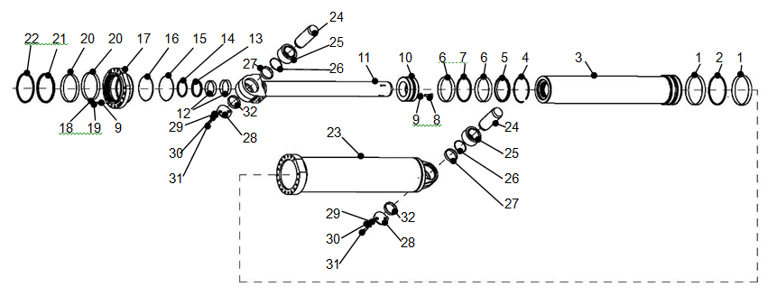
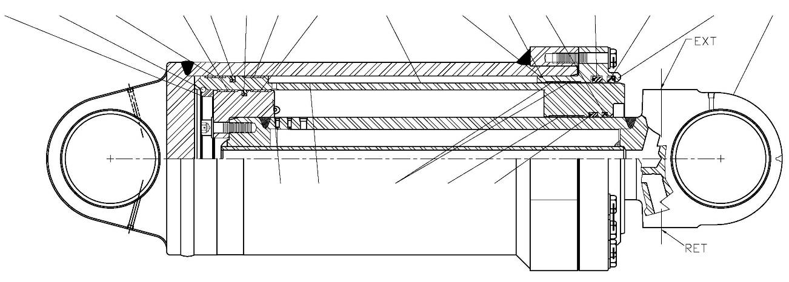

举升缸总成及安装 · HOIST CYLINDER ASSY AND MOUNTING
Гидроцилиндр подъема
Описание и расположение
Номера позиций в скобках совпадают с номерами позиций на рис. 2.
Гидроцилиндр подъема (1) представляет собой двухступенчатый гидравлический цилиндр двойного действия, конец штока гидроцилиндра подъема соединяется с рамой, конец гильзы гидроцилиндра соединяется с кузовом.
Управление
Номера позиций в скобках совпадают с номерами позиций на рис. 1.
Подъем и опускание штока гидроцилиндра подъема дают возможность осуществлять подъем и опускание кузова.
Шарнирное сочленение гидроцилиндра подъема с кузовом расположено перед шарнирным сочленением кузова с рамой, гидравлическое масло проходит через отверстия масляных каналов подъема и опускания (EXT и RET) под 3-ью трубу (11) гидроцилиндра подъема и поступает в гидроцилиндр подъема.
При подъеме кузова (шток гидроцилиндра подъема выдвигается) гидравлическое масло через клапан подъема поступает в отверстие масляного канала подъема (EXT) каждого гидроцилиндра подъема. Давление гидравлического масла по проходной трубке в 3-ей трубе (11) давит на поршень в 2-ой трубе (3) и 3-ей трубе (11) каждого гидроцилиндра, при этом выдвигается шток гидроцилиндра подъема; 3-ья труба (11) начнет выдвигаться после полного выдвижения 2-ой труба (3). Гидравлическое масло проходит по 3-ей трубе (11) со стороны штока гидроцилиндра подъема через отверстие масляного канала опускания (RET) и возвращается в гидробак через перепускное отверстие клапана подъема.
При опускании кузова (шток гидроцилиндра подъема втягивается) гидравлическое масло поступает в отверстие масляного канала опускания (RET) каждого гидроцилиндра подъема. Гидравлическое масло поступает во внутреннюю полость 3-ей трубы (11), 2-ая труба (3) начнет втягиваться после полного выдвижения 3-ей трубы (11). Гидравлическое масло проходит по 3-ей трубе (11) со стороны штока через отверстие масляного канала подъема (EXT) и возвращается в гидробак через клапан подъема.
Техническое обслуживание и регулировка
Номера позиций в скобках совпадают с номерами позиций на рис. 1.
Периодическое техническое обслуживание должно включать следующие виды работ:
Спецификация
1
Подъёмный цилиндр
5
Разделительное кольцо
9
Шайба
13
Стойка с полной резьбой
2
Подшипник
6
Позиционная плита
10
Гайка
14
Крепление гидроцилиндра
3
Стопорное кольцо
7
Болт
11
Гайка
15
Подкладка подъёмного цилиндра
4
Штифт
8
Пружинная шайба
12
Шайба
16
Разделительное кольцо
Рис. 2. Монтажная схема гидроцилиндра подъема
1. Очистить каждый гидроцилиндр подъема, тщательно очистить 2-ую трубу (3), 3-ью трубу (11) и 1-ую трубу (23) от грязи.
2. Проверить на наличие износа, утечек или повреждений. Отремонтировать или заменить по мене необходимости.
ПРЕДУПРЕЖДЕНИЕ
При подъеме больших, тяжелых деталей или автомобиля необходимо обеспечить безопасность и надежность подъемного оборудования, в противном случае это может привести к телесным повреждениям и материальному ущербу.3. Проверить состояние смазки соединений гидроцилиндра подъема с рамой и кузовом, убедиться в правильном присоединении и отсутствии повреждений.
ПРЕДУПРЕЖДЕНИЕ
Убедиться в надлежащей надежности упорных клиньев для предотвращения перемещения автомобиля и достаточной грузоподъемности подъемного оборудования, надежном креплении и высокой безопасности во избежание телесных повреждений и материального ущерба.4. Если существует вероятность утечки внутренней утечки через уплотнительный элемент гидроцилиндра подъема, можно измерить объем внутренней утечки масла в следующем порядке:
a. Остановить карьерный самосвал в безопасном месте, опустить кузов на прокладку кузова. Включить стояночный тормоз, выключить двигатель и подложить клинья под колеса.
b. Выключить двигатель и сбросить остаточное давление. Переместить рычаг управления подъемом в плавающий режим.
c. Отсоединить шланг от отверстия масляного канала подъема (EXT) гидроцилиндра подъема.
d. Поместить конец шланга в чистую пустую бочку.
e. Запустить двигатель и дать ему поработать на номинальных оборотах.
f. Переместить рычаг управления подъемом в положение «Опускание» и удерживать в этом состоянии в течение 30 секунд.
g. Переместить рычаг управления подъемом в плавающий режим.
h. Измерить объем гидравлического масла, вытекающего через отверстие масляного канала подъема (EXT) гидроцилиндра подъема. Измеренное значение для нового гидроцилиндра подъема должно быть менее 0,5 галлонов (1,9 л); измеренное значение для использованного гидроцилиндра подъема должно быть менее 1,5 галлонов (5,7 л).
ПРИМЕЧАНИЕ: Если объем утечки масла превышает указанное значение (по результатам испытаний в течение 30 секунд), то это свидетельствует о наличии внутренней утечки и необходимости проведения ремонта.
i. Снова присоединить шланг к гидроцилиндру подъема.
j. После завершения ремонта необходимо удалить воздух из системы.
Снятие
Номера позиций в скобках совпадают с номерами позиций на рис. 2.
ПРЕДУПРЕЖДЕНИЕ
Поскольку регулировка должна производиться при работающем двигателе карьерного самосвала, в связи с этим, перед началом ремонта следует использовать подходящее устройство для удержания автомобиля в неподвижном состоянии, остановить карьерный самосвал в безопасном месте. Запрещается находиться в опасной зоне вокруг движущихся частей.Снятие гидроцилиндра подъема производится в следующем порядке:
ПРИМЕЧАНИЕ: При попарном снятии и ремонте гидроцилиндров подъема (1) рекомендуется записывать расположение отверстия масляного канала подъема (EXT) и отверстия масляного канала опускания (RET) относительно автомобиля, чтобы обеспечить правильную повторную установку гидроцилиндров подъема.
1. Остановить карьерный самосвал в безопасном месте. Включить стояночный тормоз, выключить двигатель и подложить клинья под колеса.
2. Перед отсоединением любого трубопровода следует слить масло и сбросить давление в системе. Переместить рычаг управления подъемом в плавающий режим.
ПРЕДУПРЕЖДЕНИЕ
Не допускается отсоединение любого трубопровода или компонента под давлением. В первую очередь следует слить масло и сбросить давление.3. Закрыть гидравлический впускной клапан гидробака.
4. Отсоединить гидравлические трубопроводы от гидроцилиндра подъема (1). Отдельно наносить метки для обеспечения правильной повторной установки. Установить крышки и пробки на все штуцеры маслопроводов.
ПРИМЕЧАНИЕ: Поднимать и удерживать кузов на определенной высоте, чтобы оставлять пространство для облегчения снятия гидроцилиндра подъема.
5. Снять трубопровод централизованной смазки.
6. Надежно зафиксировать гидроцилиндр подъема (1) с помощью кронштейна крепления гидроцилиндра (14), гаек (10 и 11), шайбы (12), нарезной шпильки (13) и вкладыша гидроцилиндра подъема (15) или подобного устройства.
7. Снимите болт (7), пружинную шайбу (8), шайбу (9) и установочную планку (6).
8. Демонтировать штифт (4), разделительное кольцо (5) и разделительное кольцо (16).
9. Снять гидроцилиндр подъема (1).
ПРИМЕЧАНИЕ: Необходимо предотвращать телесные повреждения в результате выдвижения штока гидроцилиндр подъема в процессе снятия.
Разборка
Цифры в круглых скобках показаны на рисунке 1.
Разборка гидроцилиндра подъема производится в следующем порядке:
ПРЕДУПРЕЖДЕНИЕ
При подъеме больших, тяжелых деталей или автомобиля необходимо обеспечить безопасность и надежность подъемного оборудования, в противном случае это может привести к телесным повреждениям и материальному ущербу1. Разместить гидроцилиндр подъема в горизонтальном положении в чистой рабочей зоне, пространство данной зоны должно быть достаточно для входа, выхода и разборки.
2. Снимите контровочную проволоку (18), болт с отверстием (19) и шайбу (9), используемые для крепления направляющей втулки (17).
3. Снять направляющую втулку (17) и пылезащитное кольцо (22), уплотнительное кольцо (21), износоустойчивое кольцо (20), O-образное кольцо (15) и упорное кольцо (16) направляющей втулки (17), заменить все уплотнительные элементы новыми.
4. Отсоединить 2-ую трубу (3) и 3-ью труба (11) в сборе от 1-ой трубы (23).
5. Снять ограничительное кольцо (5) и упорное кольцо (4) 3-ей трубы (11).
6. Снять болт (8) и шайбу (9) поршня (10).
7. Снять поршень (10).
8. Снять износоустойчивое кольцо (6) и уплотнительное кольцо (7) поршня (10), заменить их новыми.
9. Отсоединить 3-ью трубу (11) от 2-ой трубы (3).
10. Снять уплотнительное кольцо (2) и износоустойчивое кольцо (1) по наружной окружности 2-ой трубы (3), уплотнительное кольцо (13), пылезащитное кольцо (14) и износоустойчивое кольцо (12) по внутренней окружности, заменить все уплотнительные элементы новыми.
Проверка и ремонт
Цифры в круглых скобках показаны на рисунке 1.
Ремонт гидроцилиндра подъема производится в следующем порядке:
1. Очистить все металлические компоненты в растворителе, в частности уплотнительные канавки 2-ей трубы (3), поршня (10) и направляющей втулки (17), отверстия во всех трубах. Проверить наличие/отсутствие износа или повреждений. Отремонтировать или заменить по мене необходимости.
2. Проверить все резьбовые детали на наличие повреждений. Отремонтировать или заменить по мере необходимости.
3. Проверить подшипник (поз. 2 на рис. 2) и стопорное кольцо (поз. 3 на рис. 2) на 1-ей трубе (23) и 3-ей трубы (11) на наличие повреждений, износа и коробления. В случае обнаружения любых неисправностей, следует снять и заменить по мере необходимости.
4. Проверить верхний палец, нижний палец (поз. 4 на рис. 2) на наличие износа или повреждений. Отремонтировать или заменить по мере необходимости.
Общая сборка
Цифры в круглых скобках показаны на рисунке 1.
Сборка гидроцилиндра подъема производится в следующем порядке:
1. Установить уплотнительное кольцо (13), пылезащитное кольцо (14) и износоустойчивое кольцо (12) по внутренней окружности 2-ой трубы (3) [см. рис. 3].
2. Установить 3-ью трубу (11) в 2-ую трубу (3), обращать особое внимание на защиту уплотнительного элемента 2-ой трубы (3) от повреждений.
3. Установить износоустойчивое кольцо (6) и уплотнительное кольцо (7) на поршень (10) [см. рис. 3].
4. Зафиксировать поршень (10) на 3-ей трубе (11) болтами (8) и шайбами (9). Момент затяжки болта (8) составляет 280-290 фут-фунтов (380-390 Н.м), следует по очереди затянуть их по диагонали до достижения момента 100, 200 и 280-290 фут-фунтов (135, 265 и 380-390 Н.м).
5. Установите кольцо (5) и стопорное кольцо (4) в отверстия во второй трубке (3), используемые для ограничения положения третьей трубки (11), см. рис. 3.
6. Установить уплотнительное кольцо (2) и износоустойчивое кольцо (1) по наружной окружности 2-ой трубы (3) [см. рис. 3].
7. Установить 2-ую трубу (3) и 3-ью трубу (11) в сборе на 1-ую трубу (23).
8. Установить пылезащитное кольцо (22), уплотнительное кольцо (21), износоустойчивое кольцо (20), O-образное кольцо (15) и упорное кольцо (16) на направляющую втулку (17) [см. рис. 3].
9. Установить направляющую втулку(17) на 1-ую труба (23) в сборе, следует обращать особое внимание на защиту уплотнительного элемента направляющей втулки (17) от повреждения.
10. Установите контровочную проволоку (18), болт (19) и шайбу (9), используемые для крепления направляющей втулки (17). Момент затяжки болт (19) составляет 280-290 фут-фунтов (380-390 Н.м), затяните в перекрестном порядке моментом затяжки 100, 200 и 280-290 фут-фунтов (135, 265 и 380-390 Н.м).
11. Если подшипник (поз. 2 на рис. 2) и стопорное кольцо (поз. 3 на рис. 2) были сняты с 1-ой трубы (23) и 3-ей трубы (11), то установить подшипник (поз. 2 на рис. 2) и стопорное кольцо (поз. 3 на рис. 2).
12. Если не получается сразу установить гидроцилиндр подъема в карьерный самосвал, то следует установить разъемные фланцевые заглушки или крышки с винтами на всех отверстия, еще следует накрывать подшипник во избежание коррозии.
Установка
Номера позиций в скобках совпадают с номерами позиций на рис. 2.
ПРЕДУПРЕЖДЕНИЕ
При подъеме больших, тяжелых деталей или автомобиля необходимо обеспечить безопасность и надежность подъемного оборудования, в противном случае это может привести к телесным повреждениям и материальному ущербу.Установка гидроцилиндра подъема производится в следующем порядке:
1. Надежно зафиксировать гидроцилиндр подъема (1) с помощью кронштейна крепления гидроцилиндра (14), гаек (10 и 11), шайбы (12), нарезной шпильки (13) и вкладыша гидроцилиндра подъема (15) или подобного устройства.
ПРИМЕЧАНИЕ: Необходимо предотвращать телесные повреждения в результате выдвижения штока гидроцилиндра подъема (1) в процессе его подъеме.
2. Совместить отверстие под подшипник в 3-ей трубе (поз. 1 на рис. 11) со стороны штока гидроцилиндра подъема (1)подшипник с монтажным отверстием в раме, отверстие масляного канала подъема (EXT) должно направляться назад, плоская боковая поверхность 3-ей трубы (поз. 1 на рис. 11) со стороны штока должна направляться к раме.
3. Установите шпонку (4), разделительное кольцо (5) и разделительное кольцо (16), а затем закрепите с помощью болта (7), пружинной шайбы (8), плоской шайбы (9) и упорной пластины (6).
4. Совместить отверстие под подшипник 1-ой трубы (поз. 23 на рис. 1) со стороны головки гидроцилиндра подъема (1) с монтажным отверстием в кузове, плоская боковая поверхность 1-ей трубы (поз. 23 на рис. 1) со стороны штока, головки гидроцилиндра должна направляться к раме.
ПРИМЕЧАНИЕ: Если отверстие под подшипник в гидроцилиндр подъема (1) 1-ой трубе (поз. 23 на рис. 1) со стороны головки гидроцилиндра не может быть совмещено с монтажным отверстием в кузове, то можно снять крепежные детали гидроцилиндра подъема (1), указанные в шаге 1, зафиксировать гидроцилиндр подъема (1) подходящим методом, совместить отверстие под подшипник в 1-ой трубе (поз. 23 на рис. 1) со стороны головки гидроцилиндра с монтажным отверстием в кузове путем выдвижения или втягивания гидроцилиндра подъема (1).
5. Установите штифт (4), разделительное кольцо (5) и разделительное кольцо (16), затем закрепите с помощью болта (7), пружинной шайбы (8), шайбы (9) и упорной пластины (6).
6. Присоединить гидравлический трубопровод.
7. Присоединить трубопровод централизованной смазки.
8. Удалить воздух из гидроцилиндра подъема в следующем порядке:
a. Запустить двигатель карьерного самосвала и дать ему поработать на низких оборотах.
b. Переместить рычаг управления подъемом в положение «Опускание» и удерживать в этом состоянии в течение несколько секунд.
c. Переместить рычаг управления подъемом в положение «Подъем» и поднимать кузов.
d. Переместить рычаг управления подъемом в положение «Опускание», отпустить его и дать кузову переходить в плавающий режим до момента опирания на раму.
e. Повторять шаги от b до d по наращиванию на 2 футов (0,7 м) до момента полного удаления воздуха из системы.
f. Повторно заправлять гидробак гидравлическим маслом.
9. Проводить испытания гидроцилиндра подъема в соответствии с порядком, указанным в части 050-0040 - «Система подъема».
Гидравлическая система – гидроцилиндр подъема
050-0080
Гидравлическая система – гидроцилиндр подъема
050-0080
2
5
Гидравлическая система – гидроцилиндр подъема
050-0080
1
3
Дополнения - Масса компонентов
200-0090
Дополнения - Масса компонентов
200-0090
42
41
Дополнения - Масса компонентов
200-0090
Спецификация1Износоустойчивое кольцо9Шайба17Направляющая втулка25Подшипник2уплотнительное кольцо10Поршень18Проволока26Упорное кольцо32-ая труба113-ья труба19Болт27Растворное кольцо4Упорное кольцо12Износоустойчивое кольцо20Износоустойчивое кольцо28Перекрышка5Кольцо13уплотнительное кольцо21уплотнительное кольцо29Пружинная шайба6Износоустойчивое кольцо14Пылезащитное кольцо22Пылезащитное кольцо30Шайба7уплотнительное кольцо15О-образное кольцо231-ая труба31Болт8Болт16Стопорное кольцо24Палец32Разделительное кольцоРис. 1. Гидроцилиндр подъема в разобранном виде
большое масляное отверстие направлено к задней части машины.
ПРЕДУПРЕЖДЕНИЕ
При подъеме больших, тяжелых деталей или автомобиля необходимо обеспечить безопасность и надежность подъемного оборудования, в противном случае это может привести к телесным повреждениям и материальному ущербу.
Спецификация1Износоустойчивое кольцо10Поршень17Направляющая втулка2уплотнительное кольцо113-ья труба20Износоустойчивое кольцо32-ая труба12Износоустойчивое кольцо21уплотнительное кольцо4Упорное кольцо13уплотнительное кольцо22Пылезащитное кольцо5Кольцо14Пылезащитное кольцо231-ая труба6Износоустойчивое кольцо15О-образное кольцо 7уплотнительное кольцо16Стопорное кольцо Рис. 3. Вид гидроцилиндра подъема в разрезе
5 4 1 6 2 7 1 6 23 15 16 14 21 22 17 11
10 3 20 12 13
Иллюстрации

